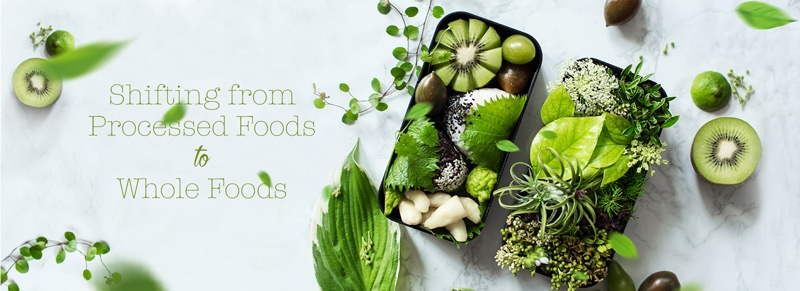
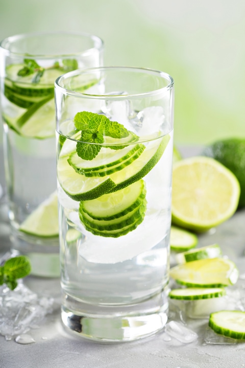

#2 – Transitioning from the S.A.D. (Standard American Diet)
If you are reading this, it means that you are ready to make a significant change in your eating lifestyle. Congratulations for that and for being here. I for one am excited. In the posts linked above, I talk about what a raw food diet looks like and how to start making the mental changes when approaching a new lifestyle. Please take note that I am referring to it as a lifestyle, not a diet.

In this post, I will be sharing how you can make some simple changes to help you get started in the right direction. Remember, this isn’t a race, do not put a time constraint on yourself. The decision to eat healthy foods takes time and effort. You will need (want) to make changes for the long haul.
Coming from the S.A.D.
I assume that you are here because your kitchen pantry and fridge are loaded with refined, heavily processed foods… and you want to change that. Great, wonderful, fan-taaaast-ic-o! I want to approach this in a reasonable way so you don’t feel too overwhelmed. And if at any point you should feel that way, just take a deep breath. You have already made great progress just by wanting to be here!
So let’s get started. I am only going to ask you to take small steps at first. This process will allow your brain, body, and emotions to get on board with this whole food idea at the same time. Trust me, if just one of these areas falls off the tracks, it can be a struggle, and we want to minimize that.
Change Beverages

You can make a significant impact on your health just by switching up what you drink. I don’t know about you, but I grew up drinking Kool-Aid, soda pop, and any other sugary drink I could get my hands on.
If you had cut me open, there would have been little blood in my sugar stream! If only the commercials on TV had told me the truth about what I was drinking!
Increase your water intake — boring Amie Sue. I know, but trust me, as time goes on you will want to make sure that your water intake is adequate to help flush your body of toxins. Start by drinking a glass of water in between meals, as much as you can. Below, I am sharing a few beverage changes that I encourage you to work on.
Soda Pop Drinkers
If you are a heavy consumer of soda pop (coke, soda, whatever you call it), start decreasing it but do it gently. Stopping “cold-turkey” may cause you so much stress and discomfort that its absence does you more harm than good. So when you’re ready for a soda detox, remember that it’s not something that needs to happen all at once. If it takes you a while to cut back, that’s okay.
- Just one small can of soda contains approximately 39 grams of sugar!
- If you drink diet soda and you think it’s ok… you must read this!
What to Watch for When Quitting Soda
Within just a short 24 hours of quitting soda, withdrawal symptoms begin. Initially, they’re subtle but hang in there, don’t Don’t Stop Believin’, always remember even while your head is throbbing that “I Will Survive“! And soon, I promise you that you will be back on your feet with The Eye of the Tiger roaring within. Ready to take on life with new energy. Once you make it through your soda detox, be sure to come back and tell me “What a Feeling” you are feeling now! Ok, ok, I am being sort of silly… but in that silliness, I am speaking the truth. After reading this last paragraph who’s ready to go roller-skating with me? (did I just date myself?! lol)
Back to the paid program… The first thing you may notice is that you feel mentally foggy and lack alertness. Your muscles are fatigued, even when you haven’t done anything strenuous, and you suspect that you’re more irritable than usual. Trust me, your suspicions are correct.
I am going to stop right here, but if you are planning on transitioning away from and sugar, please click on the links that I provided up above to learn how to manage your withdrawal symptoms plus, I will share with you some healthier alternatives that you can enjoy.
Replace Unhealthy Fats with Healthy Ones
Whether you are coming from a diet high in unhealthy fats or coming from a place of fear in eating any fat… it is important to incorporate fats into your diet. Our brain and our bodies need fat—more specifically, they need HEALTHY fats. There are so many unhealthy fats on the market that not only add pounds to your waistline, but they increase your risk of chronic diseases.
I am not just talking about swapping out your corn oil bottle with olive oil. A lot of the bad oils/fats are used in packaged foods so be sure to read labels. When eating out, always ask what type of oil they use, especially if you will be eating cooked foods. It’s easy to look the other way when other people are preparing food for you. What you don’t know, won’t hurt you… or will it?!
Let’s Avoid these
- Hydrogenated oils (added to foods to save money, extend shelf life, add texture, increase stability)
- Partially hydrogenated oil (means some trans fat is present)
- Corn oil, safflower oil, soy oil, and vegetable oil
- Margarine
- Vegetable shortening
- Packaged snacks
- Baked foods, especially pre-made versions
- Ready-to-use dough
- Fried foods
- Coffee creamers, both dairy and non-dairy
Use these Instead
Olive Oil, cold-pressed
- It is a healthy fat that’s linked to lowering the risk of heart disease, cancer, and stroke. It also works to reduce inflammation which is where disease and sickness stem from.
- Olive oil isn’t recommended for cooking at high temperatures due to its low smoke point.
- Olive oil can be used to make salad dressings, hummus, or drizzling over raw bread or steamed veggies.
Walnut Oil, Flaxseed Oil, & Macadamia Nut Oil, cold-pressed
- When purchasing these oils make sure that they are cold-pressed and are in the refrigerated section of the store.
- These oils can go rancid quickly, so continue to store them in the fridge once home.
- Use these oils sparingly because they are higher in Omega 6 fatty acids.
- They are great for dressings, smoothies, and other non-heat foods.
Avocado Oil and Avocados
- Is are rich in monounsaturated fats, which raise the levels of good cholesterol while lowering the bad.
- Avocados are also packed with the benefits of vitamin E, which helps prevent free radical damage, boosts immunity, and acts as an anti-aging nutrient for your skin. (excuse me, but I need to go eat an avocado)
- Great replacement for butter.
Nuts & Seeds
- Adding nuts and seeds to your diet can help lower LDL, or bad cholesterol, levels.
- They are rich in omega-3s. A healthy fat for a healthy brain!
- Nuts and seeds are great to snack on, add to granola mixes, use in raw desserts instead of flour, shoot, the applications are endless, almost.
Nut / Seed / Coconut Butter
- Natural peanut butter, cashew butter, sunflower seed butter, Inchi seed butter, or almond butter that’s high in protein and fiber—minus the added sugars and preservatives.
- These butters go beyond just spreading on a piece of bread… use as a thickener in smoothies, cheesecakes, and other raw desserts. They can also be ground down to use as a replacement for glutenous flours.
Coconut Oil / Butter / Dried
- Coconut oil is rich in medium-chain fatty acids, which are easy for your body to digest, not readily stored by the body as fat, and small in size, allowing them to infuse cells with energy almost immediately. These fatty acids also improve brain and memory function.
- Coconut oil is wonderful in smoothies, raw cheesecakes, and can be used to lightly sauté veggies.
- Coconut butter can also be used in smoothies, raw desserts, raw ice creams, and is delicious just by the spoon.
- Shredded coconut is great to add to salads, trail mixes, muesli cereal, oatmeal, or your morning smoothie.
Replace Refined Foods with Unrefined Foods
Virtually everyone knows those whole foods are healthier than their processed counterparts that have been stripped of most of their nutrients, including fiber, and then fortified with synthetic vitamins. Processed foods are loaded with unhealthy fats, refined sugars, and bleached salt (and everything else in between). Hydrogenated oils go hand in hand with food preservation, so that is why this type of fat often ends up in packaged foods.
Our goal is to eat food that comes in its original “wrapping.” The term “whole foods” refers to food that has not been processed or refined, or has undergone very little processing and refining. They are either natural or very close to their natural state, and they do not contain the harmful additives that are found in processed foods.
Since whole foods are natural or near-natural, they contain the highest levels of vitamins, minerals, fiber, and other nutrients. They also have healthy natural compounds called phytochemicals, some of which are antioxidants that can prevent cell damage and boost the immune system.
You are making a transitional step alone will have a HUGE impact on your life. If you don’t believe me, try it for 14 days and see how you feel… but promise me that if you are feeling better, even if by 10 percent that you will keep going. It’s time to invest in your health.
Disclaimer
This website is not intended to provide medical advice. All content, including text, graphics, images, and information available on this site is for general informational, entertainment, and educational purposes only. The content is not intended to be a substitute for professional diagnosis or treatment. The author of this site is not responsible for any adverse effects that may occur from the application of the information on this site. You are encouraged to make your own healthcare decisions, based on your research and in partnership with a qualified healthcare professional.
© AmieSue.com